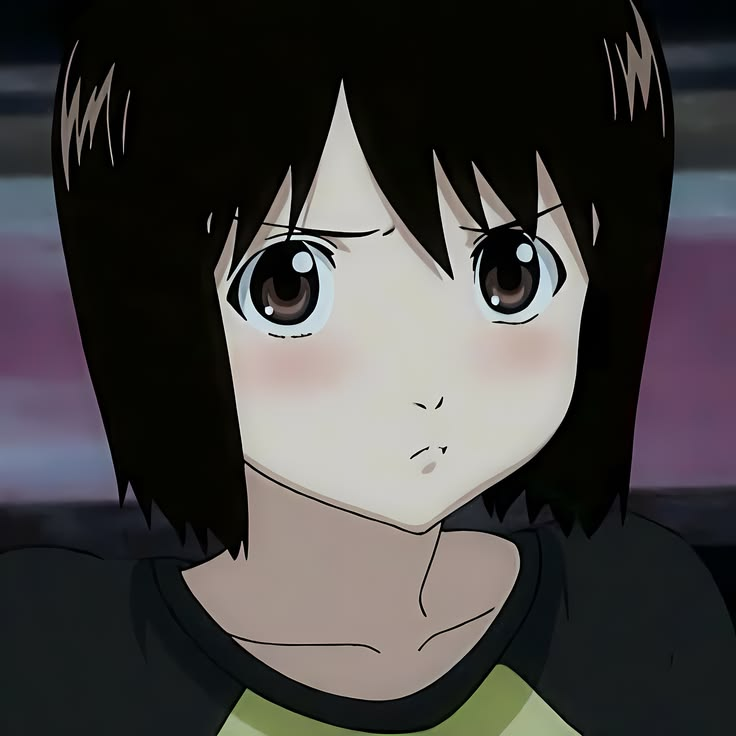
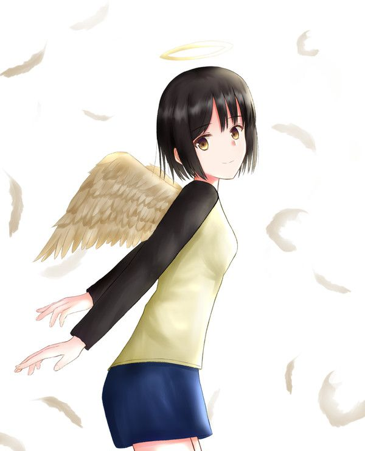
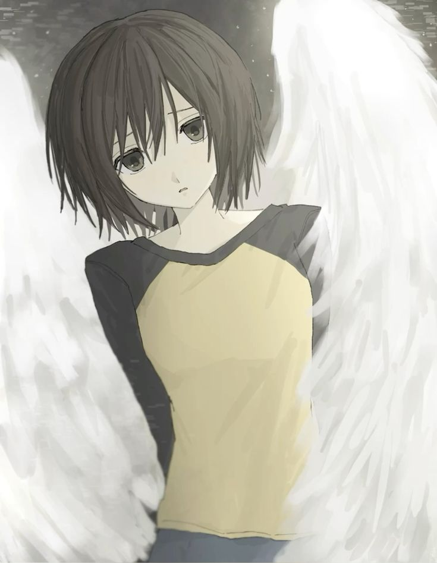
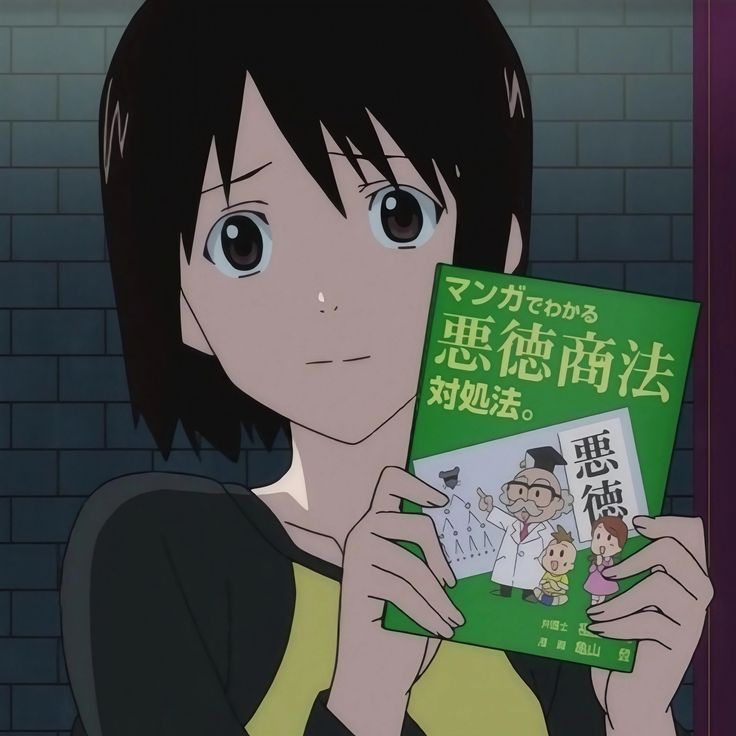
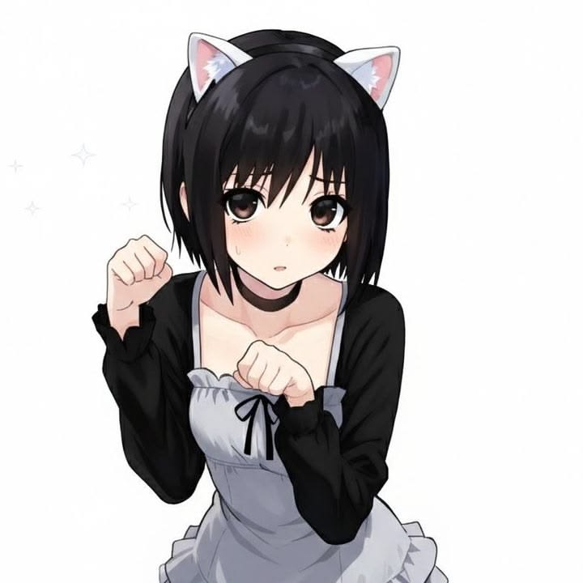
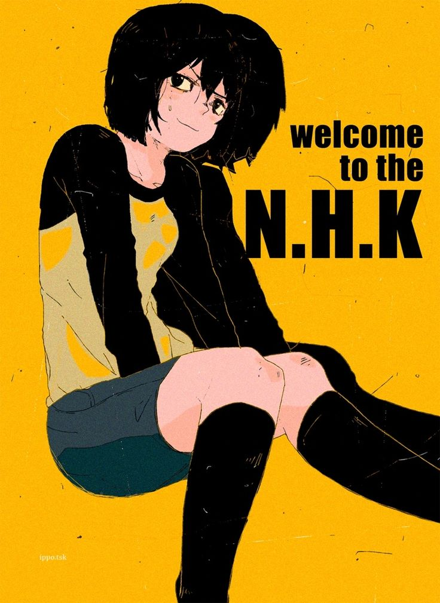

1. Она постоянно носит одужду с длинными рукавами,так как приячет ожоги,которые сделал отчим-насильник.
2. Рост и внешность. Она выше среднего роста для девушки, с короткими тёмно-каштановыми волосами и карими глазами.В аниме её образ более невинный и воспитанный, тогда как в манге она предстаёт более саркастичной и манипулятивной.
3. Зонтик. В некоторых версиях сюжета упоминается, что она всегда носит с собой зонтик, чтобы защититься от солнца.

1. Чувство одиночества и бесполезности. Мисаки убеждена, что своим существованием приносит окружающим только страдания.
2. Пограничное расстройство личности. Школьный психотерапевт неофициально поставил ей этот диагноз, что объясняет трудности в построении дружеских отношений и нестабильность эмоций.
3. Тяжёлое детство. Её отец умер вскоре после рождения Мисаки. Мать позже вышла замуж за жестокого человека, который издевался над девочкой. В итоге мать погибла, упав с утёса; Мисаки была свидетельницей этого.
4. Чувство вины и самоповреждение. После отказа Сато подписать «любовный контракт» Мисаки принимает смертельную дозу снотворного, но её спасают. Позже она пытается покончить с собой снова, но её останавливает Сато.


1. Наблюдение за Сато. Ещё до их встречи Мисаки тайно наблюдала за ним из окна своего особняка, что говорит о её склонности к сталкерству.
2. Проект по «исправлению» хикикомори. Она предлагает ему «помощь», представляясь волонтёром и предлагая подписать контракт с ночными консультациями. На самом деле она выдумала всю эту схему в тот же день.
3. Мотив поиска «более никчёмного». Изначально она выбрала Сато, потому что ей показалось, что он находится в ещё более тяжёлом положении, чем она, и поэтому может стать её «партнёром».
4. Контракт как инструмент контроля. В манге она использует психологию, чтобы провоцировать ревность и манипулировать Сато, тогда как в аниме её действия более искренни, хоть и остаются социально неловкими

1. Попытка суицида. После отказа Сато она принимает смертельную дозу снотворного, но её спасают. Позже, когда Сато тоже пытается умереть, они заключают контракт, согласно которому смерть одного означает смерть другого.
2. Финал. В аниме Мисаки, по совету Сато, возвращается к учёбе и поступает в колледж, что символизирует её попытку начать жизнь заново.
